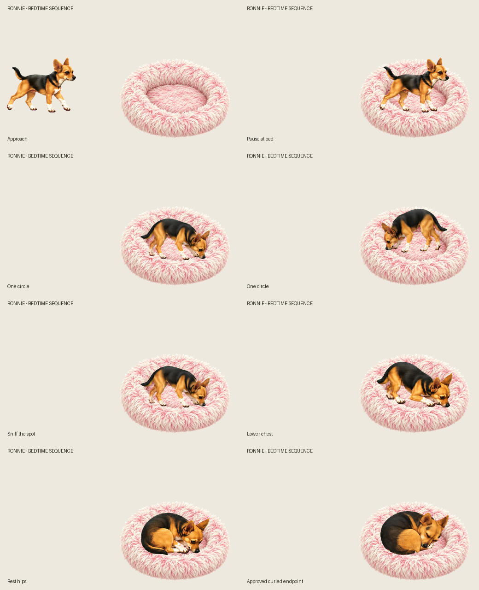

BED ENTRY · CHECKPOINT 3 OF 3
Ronnie’s bedtime sequence
Full sequence approved. Ronnie approaches, circles with sniffing pauses, lowers herself and curls up. This combines the existing artwork, ending on her approved sleeping pose. The bed remains separate.
Playback stops on her approved curled pose. Earlier foot sliding, uneven turns and the accepted settling joins remain visible. This preview holds the sleeping pose; refined breathing is still pending.
Sequence overview

Full GIF · Approved settling checkpoint · Review findings · Library notes